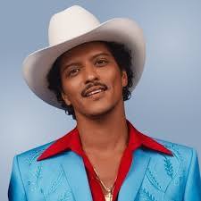
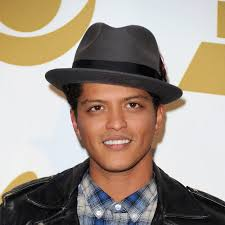
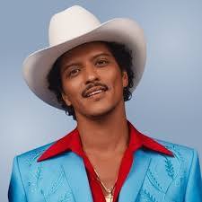
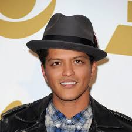

Bruno Mars
Bruno mars Merupakan penyanyi pop, hip hop, soul, dan R&B serta pencipta lagu ini lahir di Honolulu, Hawaii, pada 8 Oktober 1985. Ia dikenal dengan nama Peter Gene Hernandez, tetapi lebih populer dengan nama panggung Bruno Mars. Bruno, yang sering disapa demikian, berasal dari keluarga seniman; ayahnya, Peter Hernandez, adalah seorang pemain perkusi, sedangkan ibunya, Bernadette San Pedro Bayot, adalah seorang penari hula.
Prestasi
Bamsoet juga mengungkapkan bahwa Bruno Mars telah mencapai pencapaian yang luar biasa dalam industri musik global. Penyanyi yang berasal dari Honolulu, Hawaii, ini telah meraih 14 Grammy Awards dan menerima 30 nominasi Grammy.
Pekerjaan / Profesi
Bruno Mars, yang memiliki nama asli Peter Hernandez, kini tengah meraih kesuksesan yang signifikan sebagai bagian dari duo musik Silk Sonic. Duo ini dibentuknya bersama rapper Anderson .Paak, dan mereka telah menciptakan berbagai lagu yang mendapat sambutan hangat dari para penggemar musik di seluruh dunia. Keberhasilan Silk Sonic menandai langkah baru dalam karir Bruno, yang selalu dikenal dengan bakat musiknya yang luar biasa.
Galeri Foto
 





Referensi
- https://www.wowkeren.com/seleb/bruno_mars/bio.html#google_vignette
- https://nasional.tempo.co/read/1916576/bamsoet-harap-kesuksesan-konser-bruno-mars-dorong-pariwisata-nasional#:~:text=Bamsoet%20juga%20menjelaskan%20bahwa%20Bruno,dan%20menerima%2030%20nominasi%20Grammy.
- https://www.yahoo.com/entertainment/happened-bruno-mars-did-stop-132542408.html?guccounter=1&guce_referrer=aHR0cHM6Ly93d3cuZ29vZ2xlLmNvbS8&guce_referrer_sig=AQAAAJN_TEi1xWiZWd_77K5i2WB9SuHXgah81Y0YiYnomjnESFZnD7yP-3_WEhh_WpZmSWIJ2IErzEbk_e7FN6t5wRKPMA9rZUxJU7GbjAslCwxbapsHfN8rZPvuNNrAFtUU9DtmOhj9qaG5eGMzcQTCG3KaRLqZWeKFYXprviLwztun